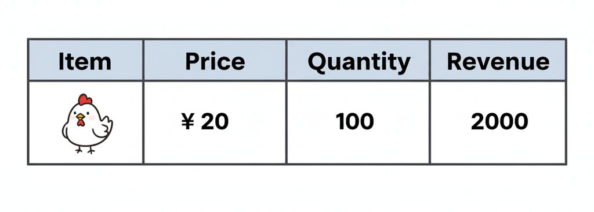
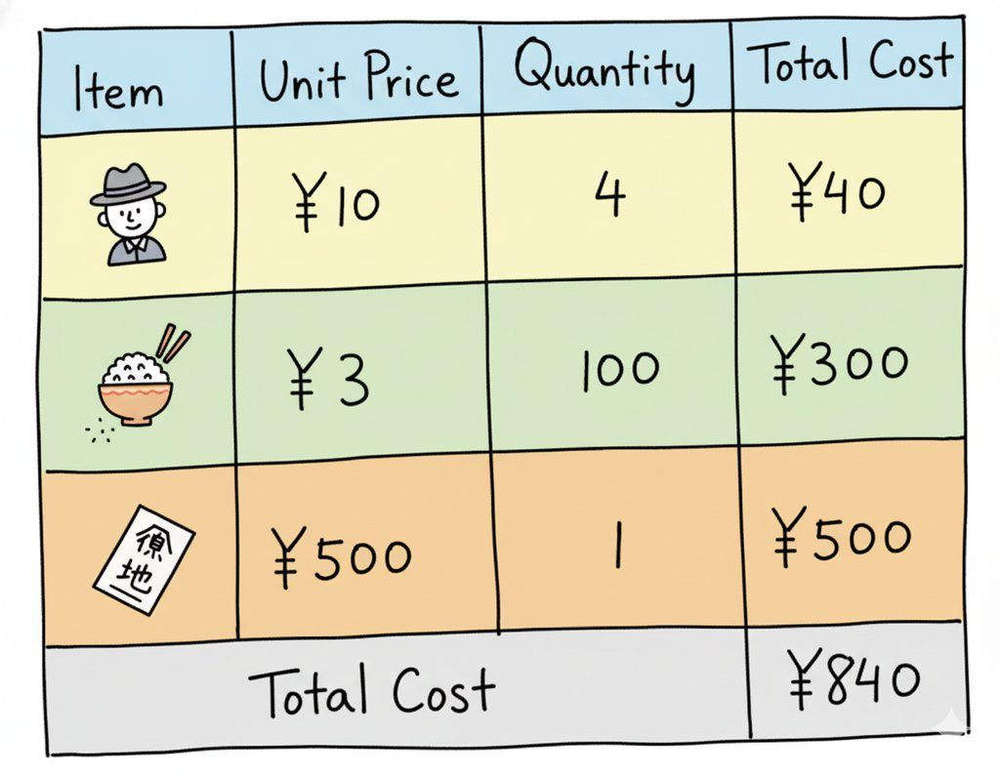
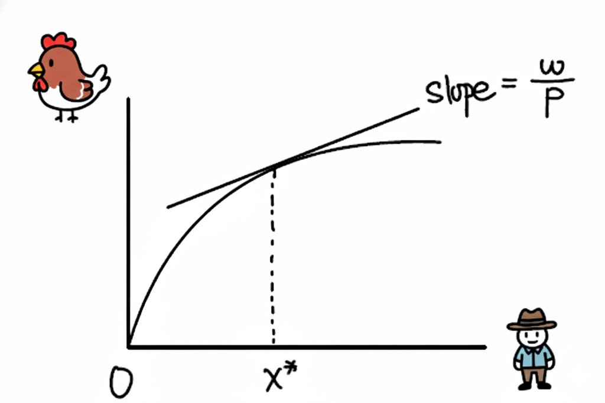
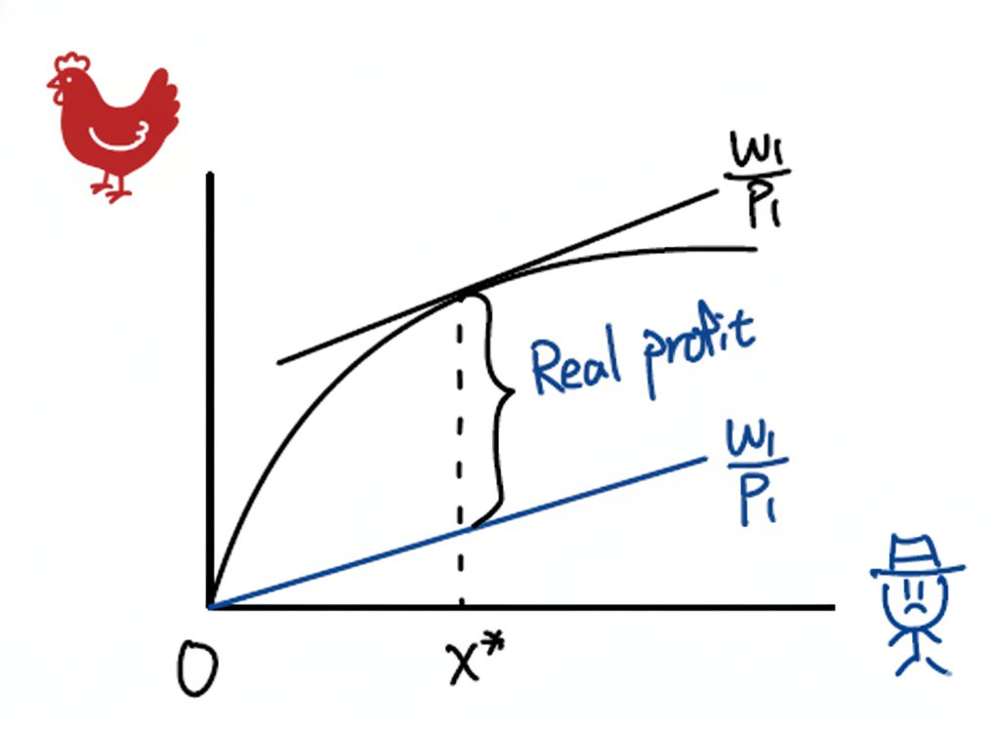
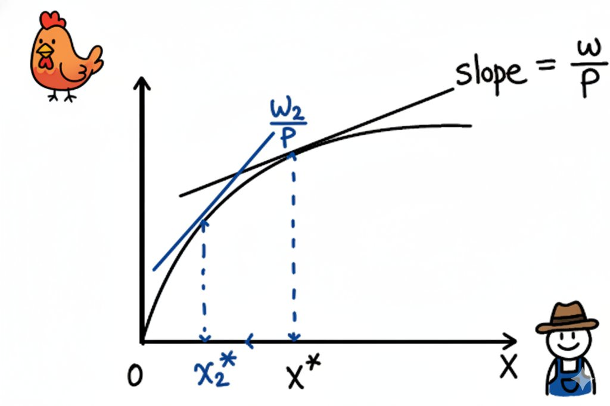
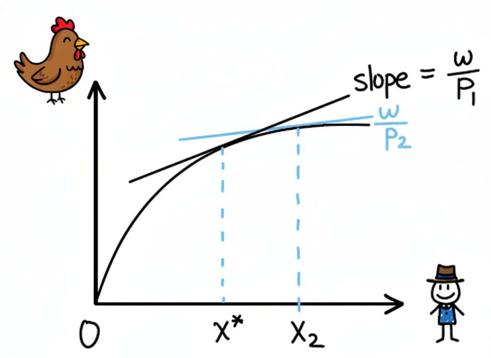

第二讲：奶奶，咱们的养鸡场赚钱了吗？#
💰 本讲核心主题：利润分析
本讲将教您如何计算利润，理解经济利润与会计利润的区别，以及如何在竞争市场中实现利润最大化。
奶奶，上回咱们聊了怎么开一家养鸡场，把鸡苗、饲料和咱们的辛苦，变成一只只肥硕的土鸡。今天，咱们就来算算账，看看咱们这个养鸡场到底赚没赚钱，以及怎么才能赚得更多。
📈 核心概念
本讲将重点讨论利润的真正含义、机会成本的概念，以及如何在短期和长期实现利润最大化。理解这些概念将帮助我们做出更明智的商业决策。
1. “赚钱”是个啥意思？——利润的定义#
您看，咱们的养鸡场开在一个养殖专业村里。村里不止咱们一家养鸡，还有好几家呢。所以，咱们的鸡卖多少钱一只，不能由着性子来。得看看周围的养鸡场卖多少，市场上的客人们愿意出多少钱。这种情况，经济学家就说，我们是价格的接受者 (Price Takers)，在一个**竞争性市场 (Competitive Market)**里做生意。
那怎么才算赚钱呢？最简单的想法就是，把卖鸡收到的所有钱，减去为了养这些鸡花掉的所有钱，剩下的就是赚的。经济学家把它写成一个简单的公式：
听起来很简单，对吧？但”成本”这两个字，里面的学问可大着呢！
经济学家还喜欢用更精确的符号来表达。假设咱们卖的鸡价格是 \(p\)，卖了 \(y\) 只；咱们用的鸡苗、饲料、付的工人工资等等，价格分别是 \(w_1, w_2, \ldots\)，用的数量分别是 \(x_1, x_2, \ldots\)。那么，咱们的利润 \(\pi\) 就是：
左边的 \(p \cdot y\) 就是总收益 (Total Revenue)，右边括号里那一长串，就是总成本 (Total Cost)。比如，一只鸡卖20元，咱们一天卖了100只，那总收益就是2000元。然后减去今天买鸡苗、买饲料、付小时工工资花掉的钱，剩下的才是利润。
Definition: 利润函数
利润 (Profit) 是总收益与总成本的差额：
其中：
\(\pi\)：利润
\(TR = p \cdot y\)：总收益（价格 × 产量）
\(TC = \sum w_i x_i\)：总成本（各项投入的成本之和）
\(p\)：产品价格
\(y\)：产出数量
\(w_i\)：第 \(i\) 种投入要素的价格
\(x_i\)：第 \(i\) 种投入要素的投入量
举个例子：咱们养鸡场的成本和利润#
奶奶，为了让您更清楚地理解这些概念，咱们来算一算具体数字吧！假设咱们今天养了100只鸡，来看看成本和收益是怎么算的。
首先，咱们的总收益：市场上一只鸡卖20元，咱们卖了100只，那就是：
{kind=link}

现在来看总成本。咱们的成本包括几个部分：人工、饲料、土地，还有其他费用。咱们把它列成一个表：
{kind=link}

从表里可以看到，咱们为了养这100只鸡，总共花了840元。
那么利润就是：
哇！看来咱们的养鸡场今天赚了1160块钱！但是奶奶，您要记住，这个是利润。
这个例子告诉我们：利润 = 收益 - 成本，但成本的计算需要很仔细，包括所有能想到的花销。
Definition: 竞争性市场
竞争性市场 (Competitive Market) 具有以下特征：
大量买者和卖者：单个企业的决策对市场价格影响很小
产品同质：所有企业生产的产品基本相同
价格接受者：企业只能接受市场价格，无法独自定价
自由进入和退出：企业可以自由进入或退出市场
完全信息：所有参与者都了解市场价格和产品信息
在竞争性市场中，企业面临的需求曲线是水平的（完全弹性）。
2. 看不见的”成本”——机会成本#
奶奶，现在我要跟您聊一个最重要的概念，叫机会成本 (Opportunity Cost)。它说的是，咱们做一件事，就意味着放弃了做其他事的机会。在那些放弃了的机会里，那个价值最高的，就是咱们做这件事的”机会成本”。
比如说，咱们俩把所有时间都扑在这家养鸡场上了。可您想啊，如果您不养鸡，是不是就可以去公园跳广场舞，或者去邻居家搓麻将，享受清闲日子？我呢，要是不在这儿帮您，是不是可以去一家大公司上班，每个月领一份不错的薪水？这些咱们为了养鸡而”放弃”了的快乐和收入，就是咱们开养鸡场的机会成本。
再比如咱们家那个空着的场地，咱们自己用来养鸡了。但如果我们不自己养，把它租给隔壁种果树的老李，他每年愿意给咱们10万块钱租金。那咱们自己用这个场地养鸡的机会成本，就是那白白放弃的10万块租金啊！所以，机会成本就是”为了得到A，而放弃的最好的B”。
Definition: 机会成本
机会成本 (Opportunity Cost) 是指为了得到某种东西而放弃的其他选择中价值最高的那个。
数学表达：
关键特征：
机会成本是隐性的，不体现在会计账本上
它是决策的”真实成本”
包括所有放弃的收益（货币和非货币的）
例子：
时间的机会成本：养鸡的时间 vs. 打工的工资
资源的机会成本：自家场地 vs. 出租的租金
资金的机会成本：投入养鸡的钱 vs. 银行存款的利息
💡 机会成本的智慧
机会成本提醒我们：决策时不仅要看”得到什么”，更要看”放弃了什么”。这个思维方式适用于生活中的各种选择，从投资理财到职业规划，都能帮我们做出更理性的决定。
3. 有些东西不能说变就变——不变和可变要素#
奶奶，您记得咱们之前聊过，养鸡得有场地、有自动化设备。这些东西，不是说想换就能马上换的。场地的租约一签就是好几年，设备买回来也得用上好几年。这种在一段时间内数量没法轻易改变的“家当”，就叫不变要素 (Fixed Factors of Production)。
但有些东西就很灵活了。比如咱们每天要买多少斤饲料，要请几个小时工来帮忙。行情好就多买点、多请几个；行情差就少买点、少请几个。这种可以根据需要随时调整数量的东西，就叫可变要素 (Variable Factors of Production)。
这就引出了两个重要的时间概念：短期 (Short-run) 和 长期 (Long-run)。
短期，指的就是至少有一种要素（比如场地）是“不变”的时期。在这段时间里，我们只能通过调整可变要素（比如人手和饲料）来改变产量。
长期，指的是一个足够长的时间，长到我们所有的“家当”都可以改变了。比如租约到期了，我们可以决定要不要换个更大的店；旧冰箱用坏了，我们可以决定买个新的还是买俩。在长期，所有要素都是可变的。
4. 短期亏钱 vs. 长期打算#
明白了短期和长期，咱们就能理解为什么有时候亏本的生意还得硬着头皮做下去。
在短期，因为场地租金这种固定成本 (Fixed Costs)是每个月必须交的，不管你养不养鸡。所以，就算行情不好，只要每天卖鸡的收入，除了付掉饲料和小时工这些可变成本 (Variable Costs)之外，还能剩下一块钱，那也比关门强。因为这一块钱可以帮我们分担一点点租金。如果彻底关门，那整个租金就得白白亏掉。所以，在短期，企业完全可能亏钱经营（也就是经济利润为负）。
但在长期，情况就不一样了。如果咱们的养鸡场连续几年算下来经济利润都是负的，那等租约一到期，咱们肯定就关门大吉了，把资源（咱们的时间、金钱、场地）用到别处去。所以，在长期，一个理性的生意人，能接受的最差结果就是经济利润为零，也就是不赚不亏。没人会傻到一直做亏本买-卖。
5. 短期里，怎样才能赚最多？#
好，现在咱们聚焦短期。场地大小和设备数量都定下来了，我们唯一能决定的，就是每天请多少小时工（可变要素 \(x_1\)）。我们的目标，就是找到一个最佳的用工数量 \(x_1^*\)，让今天的利润最大。
咱们的利润公式可以写成：
这里的 \(p \cdot f(x_1, \bar{x}_2)\) 是总收入（价格乘以产量），\(w_1 x_1\) 是付给小时工的总工资， \(w_2 \bar{x}_2\) 是咱们雷打不动的场地租金等固定成本。
怎么找到最优的 \(x_1^*\) 呢？经济学家发现了一个特别简单的黄金法则。他们对上面的公式求导，然后发现，当利润最大的时候，一定满足下面这个条件：
这个公式看着吓人，其实意思特别简单！
\(MP_1\) 是边际产量，就是多请一个小时工，能多养出多少只鸡。
\(p \cdot MP_1\) 就是边际产品价值 (Value of Marginal Product)，意思是多请一个小时工，他额外养出的那些鸡能多卖多少钱。
\(w_1\) 就是请这个小时工一小时要付的工资。
所以，这个黄金法则是说：你应该一直增加小时工，直到你付给最后一个小时工的工资，正好等于他为你创造的额外收入。
比如，一只鸡20元，小时工工资30元/小时。我们发现，多请一个小时工，他能额外多养2只鸡（\(MP_1=2\)）。那么他创造的边际产品价值就是 \(20 \times 2 = 40\) 元。因为40元比30元工资高，所以请他来是划算的，能增加总利润！我们就会继续请人。但是您知道，鸡舍人一多就乱，效率会下降（边际产品递减）。当我们请到某个人时，他一小时只能额外多养1.5只鸡，那他创造的价值就是 \(20 \times 1.5 = 30\) 元，正好等于他的工资。好了，就到此为止，再多请人就不划算了。这时候，咱们的利润就最大了。
Theorem: 短期利润最大化条件
在短期中，企业选择可变投入要素 \(x_1\) 使利润最大化：
一阶条件（利润最大化）：
即：边际产品价值 = 投入要素价格
二阶条件（确保是最大值）：
由于边际产品递减，二阶条件通常满足。
经济含义：
当 \(p \cdot MP_1 > w_1\)：增加投入会增加利润
当 \(p \cdot MP_1 < w_1\)：减少投入会增加利润
当 \(p \cdot MP_1 = w_1\)：利润达到最大
奶奶，您觉得刚才的数学公式是不是有点抽象？其实，我们可以用一个简单的图表来表达这个最优的选择情况。假设咱们的养鸡场，主要变量是饲养员的数量。想象一下，我们画一个图：横轴（x轴）是饲养员的数量，纵轴（y轴）是鸡的产量。这个曲线就是咱们的生产函数，显示了不同数量的饲养员能养出多少鸡。
然后，我们再画一条直线，它的斜率是 \(w_1 / p\)（饲养员的工资除以鸡的价格）。这条线代表成本和收入的平衡。要找到最优的饲养员数量，就让这条直线变成切线，正好切于生产函数曲线上。切点的位置，就是那个黄金法则满足的点——边际产品价值正好等于工资的最优饲养员数量 \(x_1^*\)。
这样的图能让我们一眼看出，为什么要在这个点停手：再多雇人，曲线变平了，额外产出的价值就不够支付工资了。
{kind=link}

在下面这个图中，我们可以看到实利润 \(\pi/p\) 的情况。
{kind=link}

6. 要是情况变了怎么办？——比较静态分析#
这个世界总是在变。要是小时工的工资，或者鸡的价格变了，咱们该怎么办呢？
如果小时工的工资 \(w\_1\) 涨了：那咱们的成本就高了。按照黄金法则 \(p \cdot MP\_1 = w\_1\)，现在 \(w\_1\) 变大了，咱们就得想办法让左边的 \(p \cdot MP\_1\) 也变大。因为价格 \(p\) 不变，就只能提高边际产量 \(MP\_1\)。怎么提高呢？少请几个人，鸡舍不那么挤了，留下来的人平均效率就高了。所以，工资一涨，我们就会倾向于少雇人。
{kind=link}

如果咱们的鸡价格 \(p\) 涨了：那咱们的收入就高了。现在黄金法则的左边 \(p \cdot MP\_1\) 一下子变大了，大于右边的工资 \(w\_1\)。这意味着多请人变得更划算了！于是，我们就会倾向于多雇人，扩大生产，抓住这个赚钱的好机会。
{kind=link}

7. 长期的宏图大志——长期利润最大化#
现在咱们眼光放长远一点，到了长期。这时，场地大小、设备数量，什么都可以变了。我们的目标，是找到一个包含所有要素的最佳组合（比如多大的场地配多少员工再配多少台设备），让利润最大化。
这里的道理和短期是一样的，只不过现在要对所有要素都运用那条黄金法则。也就是说，在最优状态下：
付给最后一个小时工的工资，要等于他创造的额外收入：\(p \cdot MP_{人工} = w_{人工工资}\)
花在最后一台设备上的钱（比如租金），也要等于它创造的额外收入：\(p \cdot MP_{设备} = w_{设备租金}\)
简单说，就是要把钱花在刀刃上，让花在任何一种投入上的最后一分钱，带来的回报都一样大。
8. 我们为什么需要饲料和工人？——要素需求#
奶奶，您想过没，咱们养鸡场为什么要去买饲料、鸡苗，要去雇人？不是因为咱们自己喜欢饲料，而是因为客人们喜欢吃咱们用这些东西养出来的鸡。
所以，厂商对生产要素（饲料、工人）的需求，是一种派生需求 (Derived Demand)。它不是凭空产生的，而是从消费者对最终产品（鸡）的需求中“派生”出来的。如果大家突然不爱吃鸡了，那我们对工人和饲料的需求也就立刻消失了。
我们到底需要多少工人、多少饲料，是由鸡的价格、工人的工资、饲料的价格共同决定的。描述这个关系的函数，就叫要素需求函数 (Factor Demand Functions)。
🎯 本讲总结
利润分析的核心是理解经济利润的概念和机会成本的思维方式。记住短期与长期的区别，以及竞争市场中利润趋向于零的规律。这些洞见将帮助我们更好地评估商业机会和投资决策。
9. 给爱钻研的你：Cobb-Douglas 生产函数的算术题#
奶奶，有些朋友可能觉得光听故事不过瘾，想看看具体的数学是怎么算的。虽然这部分有点“烧脑”，但它能帮我们把刚才讲的道理看得更透彻。咱们就拿经济学里大名鼎鼎的 Cobb-Douglas 生产函数 做个例子，看看怎么推导要素的需求和供给。
例子：Cobb-Douglas 生产函数的要素需求与供给函数推导
考虑一个具有 Cobb-Douglas 生产函数的厂商：\(y = A x_1^{\alpha} x_2^{1-\alpha}\)，其中 \(0 < \alpha < 1\)，\(A > 0\) 为技术参数。厂商面临产品价格 \(p\) 和要素价格 \(w_1, w_2\)。我们推导其要素需求和供给函数。
1. 短期利润最大化 (Short-run Profit Maximization)
在短期内，厂商只能调整可变要素 \(x_1\)，而固定要素 \(x_2\) 保持不变（记为 \(\bar{x}_2\)）。
问题：
\[ \max_{x_1} \quad \pi = p \cdot f(x_1, \bar{x}_2) - w_1 x_1 - w_2 \bar{x}_2 \]最优条件：
\[ p \cdot MP_1(x_1^*, \bar{x}_2) = w_1 \]其中 \(MP_1 = \frac{\partial f}{\partial x_1}\)。
对于 Cobb-Douglas 生产函数 \(y = A x_1^{\alpha} \bar{x}_2^{1-\alpha}\)，边际产品 \(MP_1 = \alpha A x_1^{\alpha-1} \bar{x}_2^{1-\alpha}\)。
一阶条件：
\[\begin{split} \begin{aligned} p \cdot \alpha A x_1^{\alpha-1} \bar{x}_2^{1-\alpha} &= w_1 \\ x_1^* &= \left( \frac{\alpha A p}{w_1} \right)^{\frac{1}{1-\alpha}} \bar{x}_2 \end{aligned} \end{split}\]由此得到短期要素需求函数 \(x_1^*(p, w_1, \bar{x}_2, A)\) 和供给函数 \(y^* = f(x_1^*, \bar{x}_2)\)。
比较静态分析：考察要素需求 \(x_1^*\) 对要素价格 \(w_1\) 和产品价格 \(p\) 的变化。
对 \(w_1\) 的变化：
\[ \frac{\partial x_1^*}{\partial w_1} = -\frac{1}{1-\alpha} \cdot \frac{1}{w_1} \cdot x_1^* < 0 \]因此，\(w_1\) 上升时，\(x_1^*\) 减少。
对 \(p\) 的变化：
\[ \frac{\partial x_1^*}{\partial p} = \frac{1}{1-\alpha} \cdot \frac{1}{p} \cdot x_1^* > 0 \]因此，\(p\) 上升时，\(x_1^*\) 增加。
2. 长期利润最大化 (Long-run Profit Maximization)
问题：
\[ \max_{x_1, x_2} \quad \pi = p A x_1^{\alpha} x_2^{1-\alpha} - w_1 x_1 - w_2 x_2 \]一阶条件：
\[\begin{split} \begin{aligned} \frac{\partial \pi}{\partial x_1} &= p A \alpha x_1^{\alpha-1} x_2^{1-\alpha} - w_1 = 0 \quad \Rightarrow \quad p \cdot MP_1 = w_1 \\ \frac{\partial \pi}{\partial x_2} &= p A (1-\alpha) x_1^{\alpha} x_2^{-\alpha} - w_2 = 0 \quad \Rightarrow \quad p \cdot MP_2 = w_2 \end{aligned} \end{split}\]边际产品：\(MP_1 = \alpha A x_1^{\alpha-1} x_2^{1-\alpha}\), \(MP_2 = (1-\alpha) A x_1^{\alpha} x_2^{-\alpha}\)。
代入一阶条件，得到：
\[\begin{split} \begin{aligned} w_1 &= p \alpha \frac{y}{x_1} \\ w_2 &= p (1-\alpha) \frac{y}{x_2} \end{aligned} \end{split}\]从一阶条件可以得到要素需求：
\[\begin{split} \begin{aligned} x_1 &= \alpha \frac{y}{w_1/p} \\ x_2 &= (1-\alpha) \frac{y}{w_2/p} \end{aligned} \end{split}\]
10. 今天的故事就到这里#
好啦，奶奶，今天咱们把养鸡场的账算得明明白白了。我们知道了什么是真正的经济利润，学会了怎么在短期和长期做出让利润最大的决定，也明白了为什么在一个充分竞争的地方，想一直赚大钱是那么不容易的一件事。这些道理，不仅能帮我们开好养鸡场，也能帮我们看懂身边好多生意场上的事儿呢！